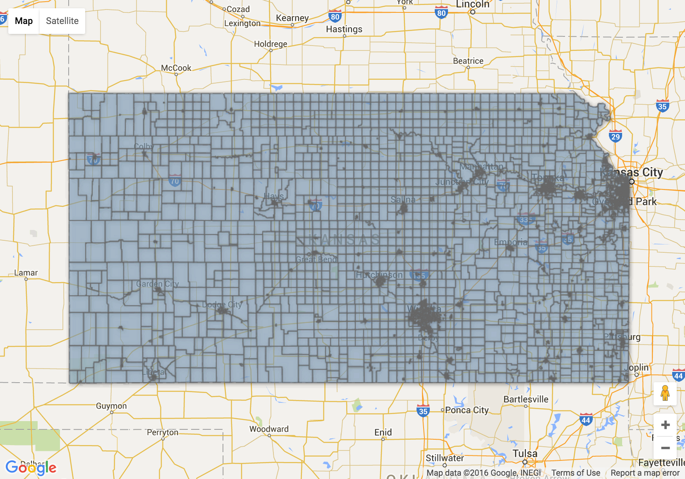

Welcome to precincts.info! Our goal is to increase participation and representation in our democracy. We believe that engaged citizens involved at a local level are the key to turning Kansas blue.
26%
There are so many open seats we can fill with modern progressives in Kansas!
Click on the image below and search our interactive map to find your voting precinct and apply to become a Precinct Captain!
